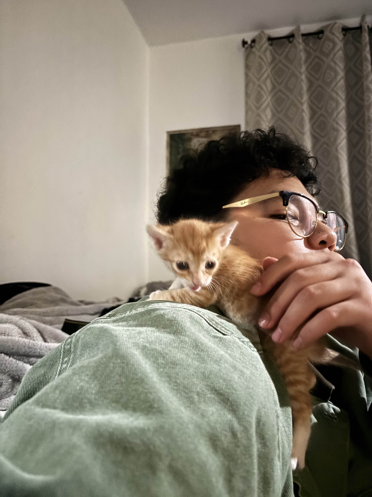

About Me

- Age: 22 Years Old
- Education: Arizona State University, Majoring in Graphics Information and Technology with a minor in Computer Science
- Hobbies: Photography, Video Editing, Coding, and Gaming
- Favorite Food: Spam Masubi
- Favorite Color: Green
- Favorite Movie: Spirited Away or The Wind Rises
- Favorite TV Show: Frieren: Beyond Journey's End
- Favorite Music: Soundtracks from Media and Indie Music
Contact
Here is how you can contact me!
Phone: (951)348-9174
Email: KaaiSandmeierrichard@gmail.comOther Social Media: @richard_kaai_sandmeier